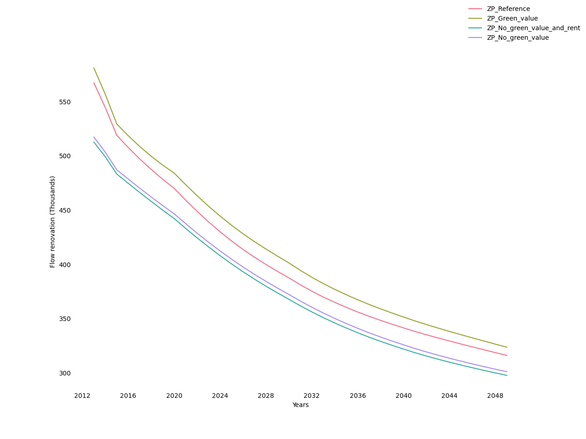
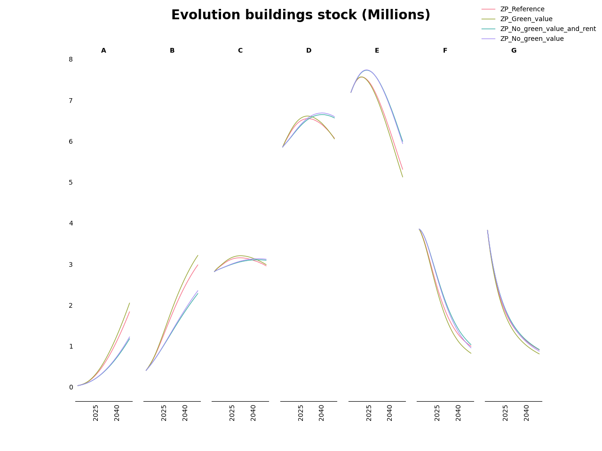
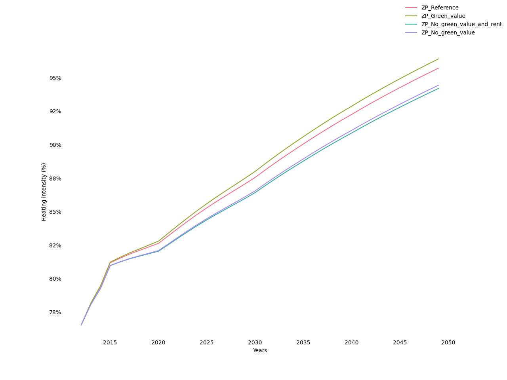
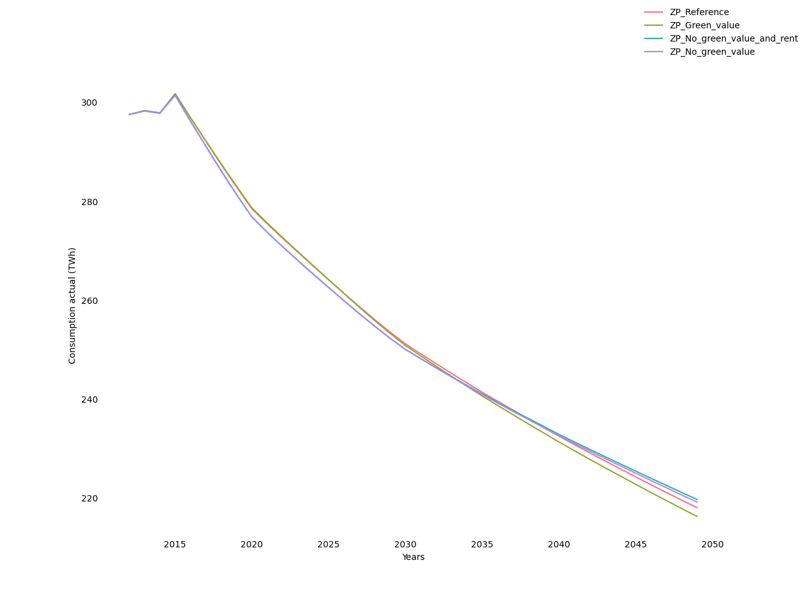

Influence of the determinants of capitalization
Here we compare the four scenarios specified in Table 19 (the scenario without the landlord-tenant dilemma corresponding to full capitalization). The absence of capitalization results in a reduction in the number and quality of renovations ( Figures 21 and 22); even if this trend induces a counter-rebound effect (Figure 23), it results in an increase in aggregate energy consumption (Figure 24). The absence of capitalization in rents has a similar effect, although much weaker. In contrast, under the assumption of full capitalization, whereby landlords have the same willingness to invest as owner-occupiers, energy efficiency improvements and, ultimately, energy savings are more important than in reference.
Figures 17 and 18 illustrate effects on the intensive and extensive margin of renovation. Figure 17 shows that freezing technological progress significantly reduces the annual flow of renovations. Additionally freezing energy prices reinforces this effect, while freezing income has no additional effect. The declining trend observed in the all-frozen scenario illustrates the depletion of the potential for profitable renovations as a result of past renovations. The comparison with the other scenarios shows that technological progress and, to a lesser extent, increasing energy prices are augmenting this potential. Figure 18 shows that the scenarios with the highest number of renovations generate fewer numbers in the low-efficiency labels (G to C) and more in high-efficiency ones (B and A).
Evolution of renovation flows under different capitalization scenarios 
Evolution of energy performance under different capitalization scenarios 
Evolution of heating intensity under different capitalization scenarios 
Evolution of final actual energy consumption 